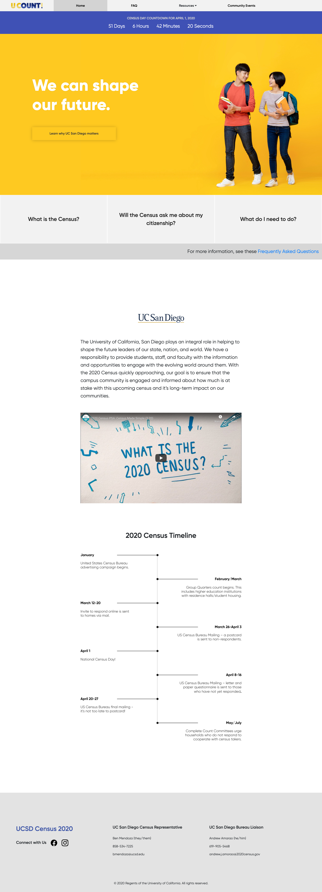

Description
The University of California, San Diego plays an integral role in helping to shape the future leaders of our state, nation, and world. We have a responsibility to provide students, staff, and faculty with the information and opportunities to engage with the evolving world around them. With the 2020 Census quickly approaching, our goal is to ensure that the campus community is engaged and informed about how much is at stake with this upcoming census and it’s long-term impact on our communities.
Responsibility
I designed and developed the census website for UCSD. Given minimal direction and visual assets, I was able to deliver a responsive, interactive website in a timely manner.
